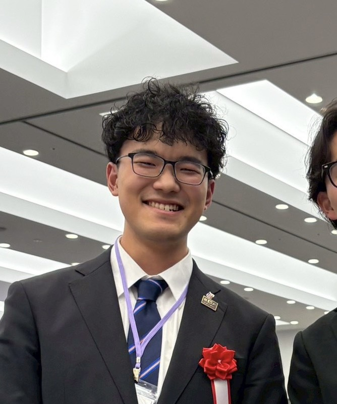

プロフィール
・学年：4年
・役職：会計
・趣味：格闘
メッセージ
山尾先輩へ 4年間お疲れ様でした！ 山尾先輩と一緒に沢山立ち会いできたこと、本当に楽しかったです！またやりたいです。 なので、また来てくださいね！ それから俺も刀使いたいです！教えてください！かっこいいしゅぱってやりたいです。 めっちゃ浅いですけど、銀魂とか好きなので、めっちゃ憧れてます。 あそれと！ひとつ言いたかったんですけど！山尾一鴻という名前はとても似合っていてかっこいいと思いました。名前と強さがあまりに一致しすぎてます！先輩の名前を俺が付けるとしたらやっぱ山尾一鴻一択ですね！もう合いすぎてヒロアカ現象起きてます。 山尾先輩には俺の就職のアドバイスをしてもらいたいのですが、あと2年かかりそうです、、すみません笑笑 お仕事で忙しいとは存じますが、どうかたまには顔だして欲しいです！部員一同、待ってます！！山尾先輩のお帰りを！！笑